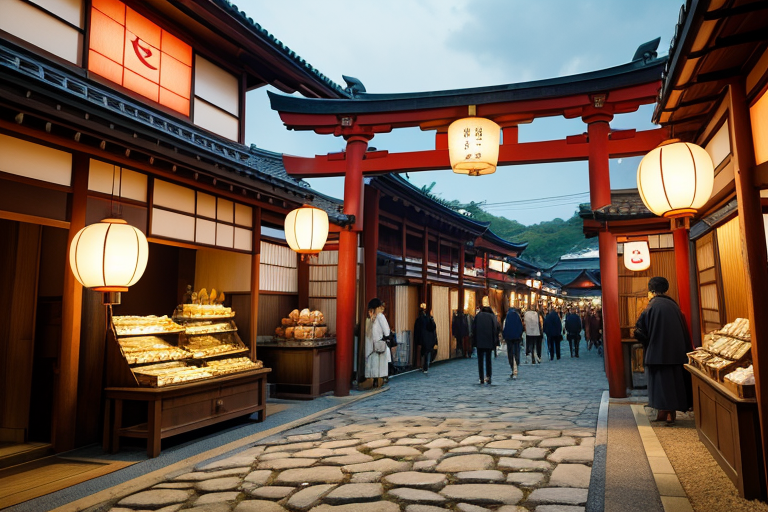
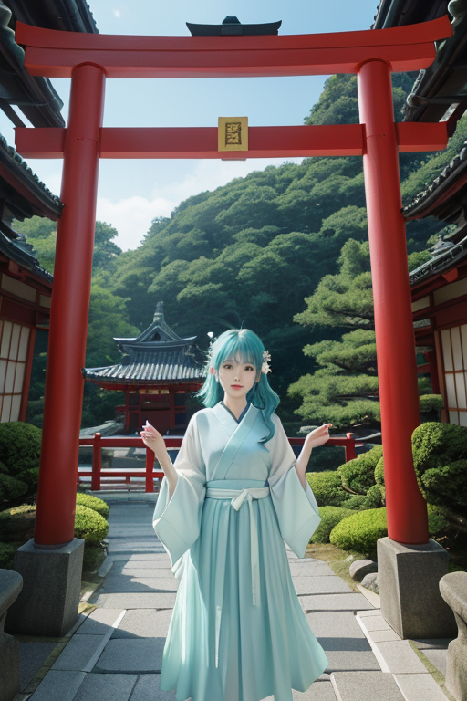
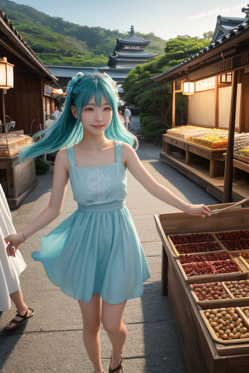
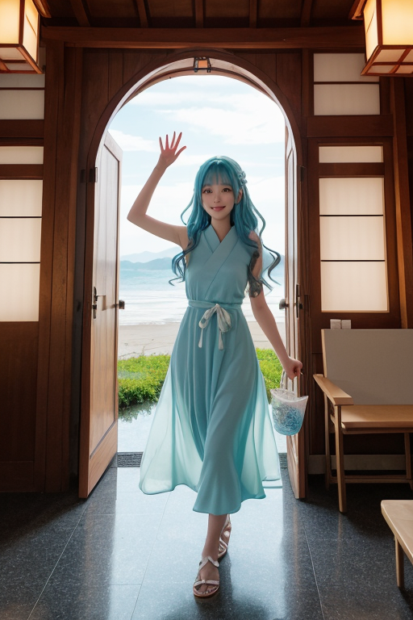

第一章 現実の千葉
あなたはまだ気づいていない。この土地にも、王がいることを。
成田山新勝寺の参道は、今日も人の流れで埋まっていた。土産物屋の店先には落花生の甘い香りが漂い、醤油の深い匂いが潮風に混じる。ここは入口だ。祈願のため、商いのため、あるいはただの観光のために、無数の人々がこの門をくぐる。その一人一人が、小さな欲望や願い、不安や期待という「歪み」を携えている。流れは活気に満ちているが、その密度は時に危うい均衡を保っている。
市場の雑踏の中、水色の髪を潮風になびかせた一人の青年が、そっと息を吐いた。チバリア・ゲート、この地の王だ。彼の目には、人々の行き交うエネルギーが、色とりどりの光の流れとして映っている。流れが一点に集中し、軋み始める。ほんの少し、ほんのわずかだが、それは災いの種になりうる。
彼は指を軽く動かした。隣の店で客が足を止め、別のグループの進路が自然に分かれる。些細な調整。王は英雄ではない。巨大な流れそのものを止めることはできない。ただ、せき止められそうになった水を、ほんの少し導くだけだ。

第二章 歪みの兆候
成田山新勝寺の参道は、今日も多くの願いを運ぶ人々で埋まっていた。門王チバリア・ゲートは、その喧噪の中に立つ。彼の目には、参拝客の流れが、祈りや欲望の色を帯びた光の帯となって映る。その帯の幾筋かが、境内の一角で、目に見えない淀みを生じていた。それは経済的な焦りか、行き場のない欲望か。流れが滞り、微かに軋む音がする。
主席妖精ゲイリアが、そっと近づいた。「門前の茶屋で、売れ残りの落花生を前に店主がため息をついています。小さな歪みの一つです」
「受け入れよ」と門王は呟く。彼の王国の本質は、あらゆるものを一旦受け入れる「入口」にある。歪みさえも。彼は指を翻す。ほんの少し、風の向きを変え、潮風が参道を抜ける角度を調整した。次の瞬間、ため息をついていた店主の前に、ふと立ち止まる家族連れが現れた。子供が落花生を指さす。
巨大な経済の流れを変えることはできない。ただ、せき止められそうになった小さな澱みを、ほんの少し、次の流れへと導き戻すだけだ。
第三章 王の葛藤
成田空港の管制塔から見下ろす滑走路は、昼夜を問わず欲望の奔流だった。門王チバリア・ゲートはその流れの只中に立ち、無数の「入口」を監視する。観光客の期待、ビジネスマンの焦り、帰国者の安堵。それら全てが、この地の歪みを濃く、重くしていた。
「歓迎すべきものと、そうでないものの区別は、つけられませんか」
妖精ウミナリアが潮風に混じって囁く。彼女は銚子の港で、荒天を避けて入港する漁船のエネルギーを微調整していた。門王は首を振る。彼の役目は選別ではなく、受容だ。だが、巨大な商業施設の陰で疲弊する地元の店、過剰な物流がもたらす道路の軋み。それらは全て、この「入口」が招き入れたものだった。
守護とは、時に招いた歪みそのものと向き合うことだ。彼は九十九里浜に吹く風を掌に受け止め、深く息を吸った。潮の香り、そして、どこか渇いた土の匂い。全てを一旦、この胸の中へ。選ばず、ただ受け入れること。それが、この「入口」の王国の、唯一にして最大の葛藤であった。

第四章 妖精との対話
ゲイリアは、成田山新勝寺の参道脇の小さな醤油屋の軒先に座っていた。観光客の流れは絶えず、金銭のやり取りが軽やかな音を立てる。
「王様は『歓迎』がお仕事ですが、私たちの仕事は、その流れの『質』を少しだけ整えることですよ」
彼女は、買い物袋を抱えすぎてよろめいた老婦人の足元を、ほんの少しだけ滑りにくい空気で支えた。ウミナリアは、九十九里浜のサーフショップで、初めて波に挑もうと緊張する少年の背中を、潮風でそっと押した。
「商いとは、物や金の交換だけじゃない。不安と安心、未知と既知の交換でもある。この半島は昔から、海の向こうから来るもの、そして人を、受け入れてきた。漁に、醤油づくりに。今は飛行機に、買い物に」
歪みは、この過剰なまでの「受け入れ」そのものから生まれる。ゲイリアは、疲れた店員の肩を、通りすがりの風で軽く揉むように流した。
「全ての入口は、出会いの代償を求めます。私たちは、その代償が少しだけ軽くなるよう、微調整しているだけ」
彼女は、落花生の煎りたての香りが漂う空気を見上げた。ここは、何かを手放し、何かを得る、終わらない交換の場なのだ。

第五章 微調整と余韻
成田空港の到着ロビー。ゲイリアは、巨大な窓ガラスに映る夕焼けを見つめていた。何千という人々の期待や不安が、潮風のように流れていく。彼女はそっと息を吹きかける。ほんの少し、風向きを変える。疲れた帰国者の足取りが、たまたま空いているタクシー乗り場へと向かう。初めての訪日客が、ふと目にした案内板の文字が、なぜかすっと理解できる。
鋸山の頂上で、チバリア・ゲートは目を閉じていた。足元に広がる房総の地図に、無数の光の糸が張り巡らされている。人の流れ、金の流れ、願いの流れ。その全てが、この地の「入口」を通る。彼は糸の張りを微調整する。ほんの少し、ほんの少しだけ。九十九里浜で波に足を取られそうになった子供の手が、たまたま通りかかった父親に掴まれる。銚子の漁港で、重い荷物を運ぶ老人の前に、ちょうど空いた台車が転がってくる。
誰も気づかない。それが、彼らの仕事だ。災害は消せない。ただ、偶然の配列を、ほんの少しだけ優しい方へずらす。養老渓谷のせせらぎのように、絶え間なく、目立たなく。
夕暮れの成田山新勝寺。最後の参拝客が仁王門をくぐり抜ける。その背中に、水色の光が一瞬、優しくまとった。
あなたの町にも、王がいる。